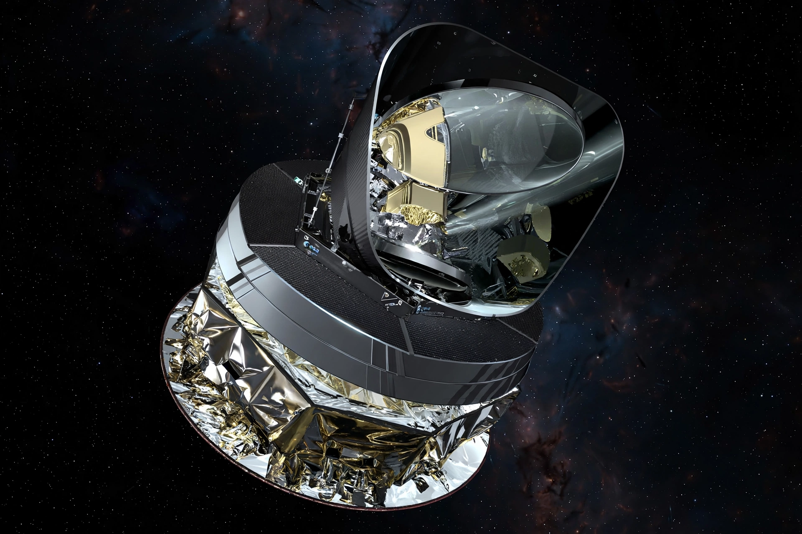

Planck was a space observatory operated by the European Space Agency (ESA) from 2009 to 2013. It mapped the cosmic microwave background (CMB) at microwave and infrared frequencies with high sensitivity and angular resolution.
| Planck | |
|---|---|
 | |
| Operator | ESA |
| Launch | 14 May 2009 |
| End of mission | 23 October 2013 |
| Orbit | L2 halo orbit |
| Instruments | LFI, HFI |
Launched with Herschel on an Ariane 5, Planck surveyed the whole sky to measure anisotropies of the CMB, improving on WMAP and COBE.
Planck data refined estimates of the age of the universe (~13.8 billion years), its composition (dark matter, dark energy, ordinary matter), and the Hubble constant. Its all-sky maps were released in 2013, 2015 and 2018 (legacy release).
The Low Frequency Instrument (30–70 GHz) and High Frequency Instrument (100–857 GHz, cooled to 0.1 K) allowed foreground removal and precise cosmology.